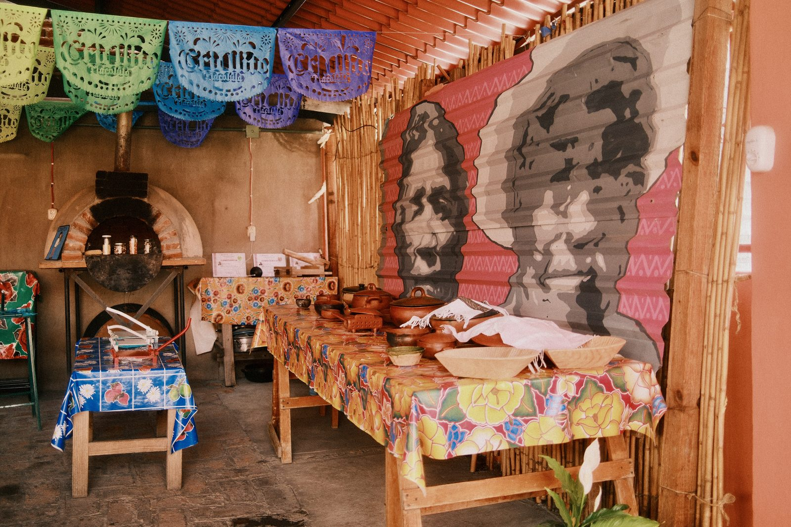

The person behind the passport

The cocina, Tlacolula Valley — Swap this for your portrait when ready.
"I travel carry-on only. I eat whatever's in front of me. I write what I actually felt, not what sounds good."
By day, I build social media and content strategy for world-class sports performance brands. By every other waking hour, I'm chasing the feeling you get in a city you've never been to, when you've been walking for three hours with no destination and end up somewhere you'd never have found on purpose.
This journal started as an excuse to use a camera. It turned into something more honest than that. I started writing down what I was actually noticing and thinking, not the polished version you'd put in a caption. The missed connections, the bad bets on restaurants, the moments that only make sense days later when you're back home and the place starts to take shape in your memory.
I hold dual U.S. and Mexican citizenship. I run hot. I've made peace with arriving somewhere with more questions than answers, which is really just another way of saying I like going places that require some effort.
"The journey is part of the experience. An adventure in itself."
— Anthony Bourdain
Bourdain and Hemingway are the north stars here. One taught me that a meal is a window into a culture and that you don't need to editorialize what you find on the other side of it. The other taught me that the best writing is what you leave out. I'm still learning both lessons.
The gear is a Fujifilm X100VI and whatever DJI equipment fits in the front pocket of my 35L backpack. No checked bags, ever. The constraint makes you choose better.
Based
Phoenix, AZ
Citizenship
U.S. + Mexico
Day Job
Social Media & Content
Bag Policy
35L. Always.
Last Destination
Oaxaca + CDMX, MX
Next Destination
TBD
Creative Influences